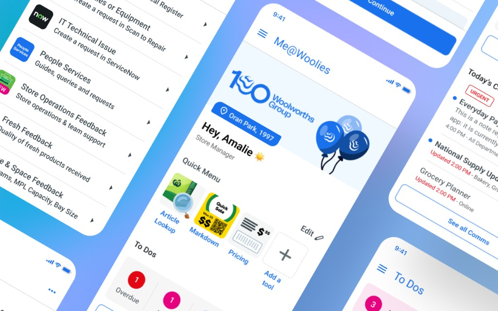
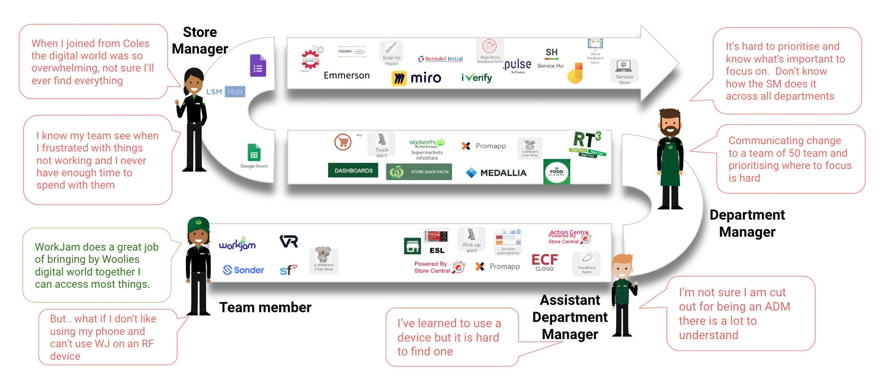
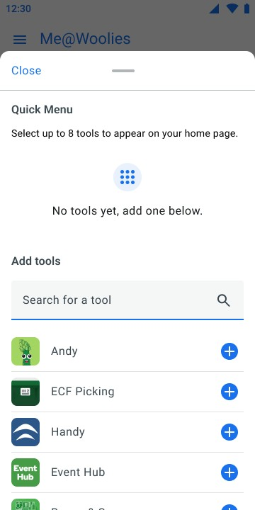
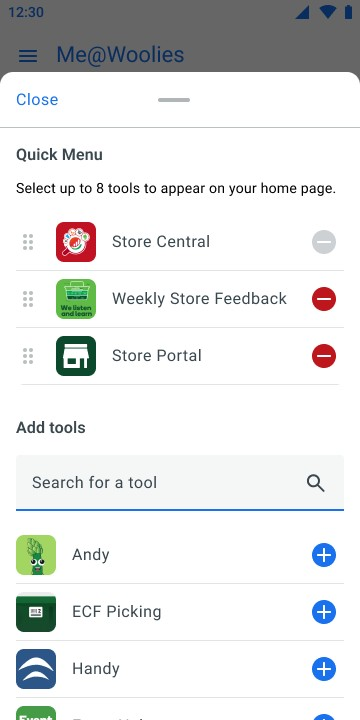
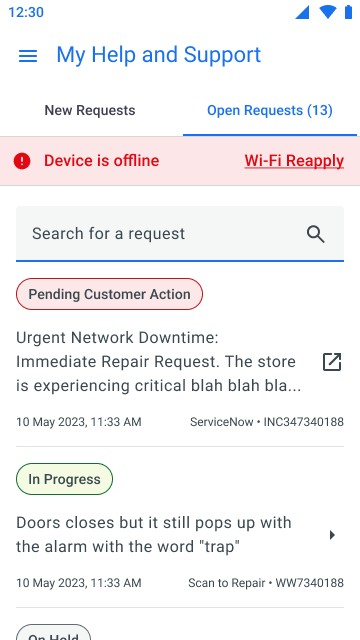
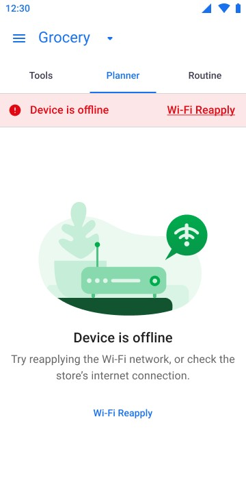

Me@Woolies: Core Platform

Challenge
Woolworths store teams were navigating more than 70 apps and platforms just to do their jobs, and the fragmentation compounded across every part of the day-to-day experience.
There was no single place to find the tools, guides or contacts a shift actually needed. Updates and announcements were scattered across channels with no consistent home, and getting a question to the right place meant knowing who to ask rather than where to go. All of it was hardest on new starters, who were learning the patchwork at the same time as the job.

Solution
Me@Woolies was designed as a single front door for the team experience. It consolidated tools, comms and support into one personalised platform, with a consistent experience across 1,000+ store locations while still adapting to individual roles and departments. The goal was never to replace every existing system — it was to give every team member one place to start, whatever they needed.
It runs on the RF devices store teams pick up at the start of a shift rather than on personal phones. A team member is assigned a device for that shift and signs in through a device manager, so personalisation had to follow the person rather than the hardware, keyed to their role and paying department.
My Design & Approach
I joined the WooliesX engagement at Designit as a UX Designer working across the full delivery lifecycle. I was embedded in cross-functional squads alongside product, operations, and store teams — responsible for feature design, user research, and developer-ready outputs.
Tobias ran in-store research and I supported him in interviews and observations to understand the real pain points of team members across different roles and locations. That research directly shaped the design decisions I brought into sprint cycles.
I designed and iterated on features through design sprints, cross-functional reviews, and continuous feedback loops. All outputs were delivered as dev-ready Figma files built on the Me@Woolies design system, which I set up and maintained across the program, with technical requirements embedded to support smooth developer handoff.
Design Challenges
Design Challenge 1: The Quick Menu Constraint
The ideal experience for the quick menu was drag-and-drop reordering, letting team members customise which tools sat at their fingertips. But the platform was being built in PowerApps, and drag-and-drop wasn’t something the dev team could build at the time. Rather than cut the feature, I redesigned the interaction around up/down arrows next to each item — a small compromise that kept the core value (team members controlling their own quick menu) without needing a build capability that didn’t exist yet. Later in the build, the dev team found a way to make drag-and-drop work in PowerApps after all, and we were able to implement the original design.


Design Challenge 2: Designing for a Dropped Connection
Store connectivity isn’t reliable. People use these devices in cool rooms, back docks and aisles where the signal drops, so offline couldn’t be an error state — it had to be a version of the app that still worked.
I specced it area by area: home, profile, my department, my inbox, help and support. Comms and support tickets cache from the last successful load, so people can still read what they’d already received. Home renders in its last-updated state for anyone who’d signed in that day. PDF routines and planners don’t load, because there was no realistic way to hold them.
Instead of disabling the things that couldn’t work, I left them in. Someone can still tap a toggle in their profile, or open the quick menu drawer and try to add a tool, and a toast tells them the action isn’t available while they’re offline. Greying controls out would have been easier to build and would have taught people nothing — they’d have assumed the app was broken rather than understanding they’d lost signal.


Result
The first version of Me@Woolies launched in November 2024, rolling out to more than 1,000 stores and fulfilment centres across Australia and reaching over 130,000 team members. Digital tool adoption picked up across store teams, announcements landed more consistently than they had before, and the feedback from stores was that people felt more confident and more productive day to day.
What I Learnt
The drag-and-drop constraint taught me not to treat a platform limitation as a reason to cut a feature. The arrows version wasn’t what I’d originally designed, but it worked well enough that by the time drag-and-drop did become possible in PowerApps, staff were already used to the arrows and getting on fine with them. That’s stuck with me since: sometimes the workaround turns out to be the actual answer, not just a stopgap until you get the “real” version.